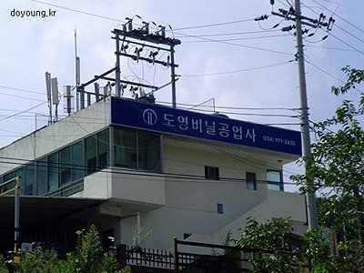
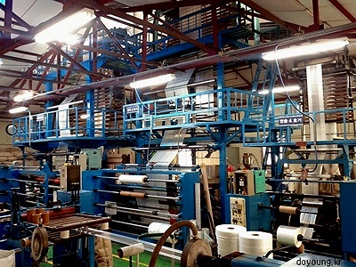
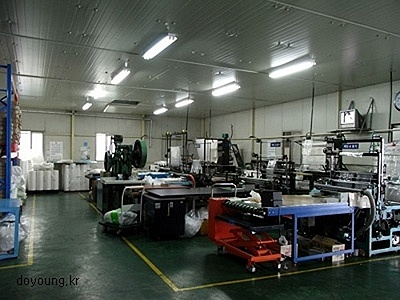
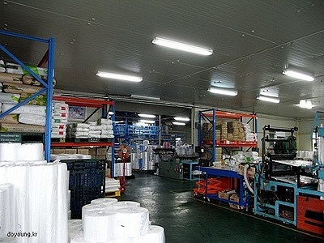

회사소개
도영비닐공업사 홈페이지를 방문하여 주셔서 대단히 감사합니다.
1986년 도영비닐공업사로 창업 이래 대형 압출기 및 중소형 압출기 외 각종 가공기를 다양하게 구비하고 있습니다.
제품의 두께, 폭 등을 구매자 분들의 요구에 맞도록 신속하고 정확하게 생산하여 공급할 것을 약속드립니다.
전자제품 포장용, 자동차부품 포장용, 섬유 포장용, 공업용, 식품 포장용(등록업체) 등 전 제품을 생산하고 있습니다.
30년 이상 축적된 노하우로 구매자 분들의 의견을 존중하여 정확하고 저렴한 제품을 공급하도록 노력하겠습니다.




인증서

클린 인증서

성적서

성적서